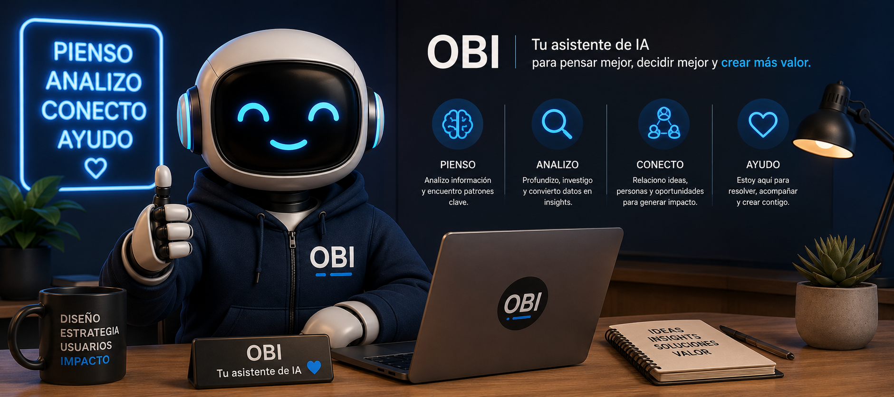

Un sistema de IA personal construido desde cero con Claude, n8n, Supabase y Telegram. No un template, no un SaaS — un producto diseñado para resolver mis problemas reales como líder de producto.
Habla con Obiel problema
Como Head of Product Design & IA en Satrack, mi día combina decisiones de producto, liderazgo de equipo, revisiones de diseño, comunicación ejecutiva y estrategia. El problema no era falta de herramientas — era que ninguna herramienta me conocía lo suficiente para ser realmente útil.
Usaba Notion para tareas, Gmail para correos, Calendar para reuniones — pero ningún sistema conectaba el contexto entre ellos. Cada herramienta vivía en su silo.
La pregunta que me hice: ¿Puedo construir un asistente que me conozca, que tenga contexto de mi trabajo, que esté disponible donde ya estoy — sin fricciones, sin apps extra, sin onboardings?
ideación y decisiones
Antes de escribir una sola línea de código, definí qué tipo de producto quería construir. No un bot de chat genérico — un asistente estratégico con memoria, contexto y carácter.
arquitectura técnica
El stack no fue elegido por popularidad — fue elegido por lo que cada herramienta hace mejor en el contexto de un sistema personal de IA.
qué hace obi hoy
lo que aprendí
impacto personal
habla con obi
Obi conoce su experiencia, proyectos y forma de trabajar. Pregúntale lo que quieras.
Las conversaciones se guardan para mejorar la experiencia.
Conversations are saved to improve the experience.